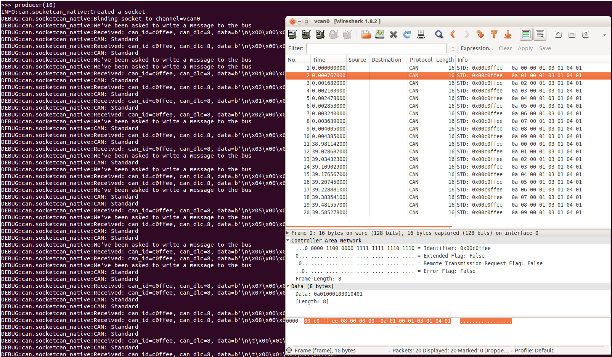

SocketCAN#
The SocketCAN documentation can be found in the Linux kernel docs in the
networking directory. Quoting from the SocketCAN Linux documentation:
The socketcan package is an implementation of CAN protocols (Controller Area Network) for Linux. CAN is a networking technology which has widespread use in automation, embedded devices, and automotive fields. While there have been other CAN implementations for Linux based on character devices, SocketCAN uses the Berkeley socket API, the Linux network stack and implements the CAN device drivers as network interfaces. The CAN socket API has been designed as similar as possible to the TCP/IP protocols to allow programmers, familiar with network programming, to easily learn how to use CAN sockets.
Important
python-can versions before 2.2 had two different implementations named
socketcan_ctypes and socketcan_native. These were removed in
version 4.0.0 after a deprecation period.
Socketcan Quickstart#
The CAN network driver provides a generic
interface to setup, configure and monitor CAN devices. To configure
bit-timing parameters use the program ip.
The virtual CAN driver (vcan)#
The virtual CAN interfaces allow the transmission and reception of CAN frames without real CAN controller hardware. Virtual CAN network devices are usually named ‘vcanX’, like vcan0 vcan1 vcan2.
To create a virtual can interface using socketcan run the following:
sudo modprobe vcan
# Create a vcan network interface with a specific name
sudo ip link add dev vcan0 type vcan
sudo ip link set vcan0 up
Real Device#
vcan should be substituted for can and vcan0 should be
substituted for can0 if you are using real hardware. Setting the
bitrate can also be done at the same time, for example to enable an
existing can0 interface with a bitrate of 1MB:
sudo ip link set can0 up type can bitrate 1000000
CAN over Serial / SLCAN#
SLCAN adapters can be used directly via CAN over Serial / SLCAN, or
via SocketCAN with some help from the slcand utility
which can be found in the can-utils package.
To create a socketcan interface for an SLCAN adapter run the following:
slcand -f -o -c -s5 /dev/ttyAMA0
ip link set up slcan0
Names of the interfaces created by slcand match the slcan\d+ regex.
If a custom name is required, it can be specified as the last argument. E.g.:
slcand -f -o -c -s5 /dev/ttyAMA0 can0
ip link set up can0
PCAN#
Kernels >= 3.4 supports the PCAN adapters natively via SocketCAN, so there is no need to install any drivers. The CAN interface can be brought like so:
sudo modprobe peak_usb
sudo modprobe peak_pci
sudo ip link set can0 up type can bitrate 500000
Intrepid#
The Intrepid Control Systems, Inc provides several devices (e.g. ValueCAN) as well as Linux module and user-space daemon to make it possible to use them via SocketCAN.
Refer to below repositories for installation instructions:
Send Test Message#
The can-utils library for Linux includes a cansend tool which is useful to send known payloads. For example to send a message on vcan0:
cansend vcan0 123#DEADBEEF
CAN Errors#
A device may enter the “bus-off” state if too many errors occurred on the CAN bus. Then no more messages are received or sent. An automatic bus-off recovery can be enabled by setting the “restart-ms” to a non-zero value, e.g.:
sudo ip link set canX type can restart-ms 100
Alternatively, the application may realize the “bus-off” condition by monitoring CAN error frames and do a restart when appropriate with the command:
ip link set canX type can restart
Note that a restart will also create a CAN error frame.
List network interfaces#
To reveal the newly created can0 or a vcan0 interface:
ifconfig
Display CAN statistics#
ip -details -statistics link show vcan0
Network Interface Removal#
To remove the network interface:
sudo ip link del vcan0
Wireshark#
Wireshark supports socketcan and can be used to debug python-can messages. Fire it up and watch your new interface.
To spam a bus:
import time
import can
interface = 'socketcan'
channel = 'vcan0'
def producer(id):
""":param id: Spam the bus with messages including the data id."""
bus = can.Bus(channel=channel, interface=interface)
for i in range(10):
msg = can.Message(arbitration_id=0xc0ffee, data=[id, i, 0, 1, 3, 1, 4, 1], is_extended_id=False)
bus.send(msg)
time.sleep(1)
producer(10)
With debugging turned right up this looks something like this:


The process to follow bus traffic is even easier:
for message in Bus(can_interface):
print(message)
Reading and Timeouts#
Reading a single CAN message off of the bus is simple with the bus.recv()
function:
import can
bus = can.Bus(channel='vcan0', interface='socketcan')
message = bus.recv()
By default, this performs a blocking read, which means bus.recv() won’t
return until a CAN message shows up on the socket. You can optionally perform a
blocking read with a timeout like this:
message = bus.recv(1.0) # Timeout in seconds.
if message is None:
print('Timeout occurred, no message.')
If you set the timeout to 0.0, the read will be executed as non-blocking,
which means bus.recv(0.0) will return immediately, either with a Message
object or None, depending on whether data was available on the socket.
Filtering#
The implementation features efficient filtering of can_id’s. That filtering occurs in the kernel and is much much more efficient than filtering messages in Python.
Broadcast Manager#
The socketcan interface implements thin wrappers to the linux broadcast manager
socket api. This allows the cyclic transmission of CAN messages at given intervals.
The overhead for periodic message sending is extremely low as all the heavy lifting occurs
within the linux kernel.
The BusABC initialized for socketcan interface transparently handles
scheduling of CAN messages to Linux BCM via send_periodic():
with can.interface.Bus(interface="socketcan", channel="can0") as bus:
task = bus.send_periodic(...)
More examples that uses send_periodic() are included
in python-can/examples/cyclic.py.
The task object returned by send_periodic() can be used to halt,
alter or cancel the periodic message task:
- class can.interfaces.socketcan.CyclicSendTask(bcm_socket, task_id, messages, period, duration=None)[source]#
A SocketCAN cyclic send task supports:
setting of a task duration
modifying the data
stopping then subsequent restarting of the task
Construct and
start()a task.- Parameters:
bcm_socket (socket) – An open BCM socket on the desired CAN channel.
task_id (int) – The identifier used to uniquely reference particular cyclic send task within Linux BCM.
messages (Sequence[Message] | Message) – The messages to be sent periodically.
period (float) – The rate in seconds at which to send the messages.
duration (float | None) – Approximate duration in seconds to send the messages for.
- modify_data(messages)[source]#
Update the contents of the periodically sent CAN messages by sending TX_SETUP message to Linux kernel.
The number of new cyclic messages to be sent must be equal to the original number of messages originally specified for this task.
Note
The messages must all have the same
arbitration_idlike the first message.- Parameters:
messages (Sequence[Message] | Message) – The messages with the new
can.Message.data.- Return type:
None
Buffer Sizes#
Currently, the sending buffer size cannot be adjusted by this library. However, this issue describes how to change it via the command line/shell.
Bus#
The SocketcanBus specializes BusABC
to ensure usage of SocketCAN Linux API. The most important differences are:
usage of SocketCAN BCM for periodic messages scheduling;
filtering of CAN messages on Linux kernel level;
usage of nanosecond timings from the kernel.
- class can.interfaces.socketcan.SocketcanBus(channel='', receive_own_messages=False, local_loopback=True, fd=False, can_filters=None, ignore_rx_error_frames=False, **kwargs)[source]#
A SocketCAN interface to CAN.
It implements
can.BusABC._detect_available_configs()to search for available interfaces.Creates a new socketcan bus.
If setting some socket options fails, an error will be printed but no exception will be thrown. This includes enabling:
that own messages should be received,
CAN-FD frames and
error frames.
- Parameters:
channel (str) – The can interface name with which to create this bus. An example channel would be ‘vcan0’ or ‘can0’. An empty string ‘’ will receive messages from all channels. In that case any sent messages must be explicitly addressed to a channel using
can.Message.channel.receive_own_messages (bool) – If transmitted messages should also be received by this bus.
local_loopback (bool) – If local loopback should be enabled on this bus. Please note that local loopback does not mean that messages sent on a socket will be readable on the same socket, they will only be readable on other open sockets on the same machine. More info can be read on the socketcan documentation: See https://www.kernel.org/doc/html/latest/networking/can.html#socketcan-local-loopback1
fd (bool) – If CAN-FD frames should be supported.
can_filters (Sequence[CanFilter | CanFilterExtended] | None) – See
can.BusABC.set_filters().ignore_rx_error_frames – If incoming error frames should be discarded.
- RECV_LOGGING_LEVEL = 9#
Log level for received messages
- channel_info = 'unknown'#
a string describing the underlying bus and/or channel
- property filters: Sequence[CanFilter | CanFilterExtended] | None#
Modify the filters of this bus. See
set_filters()for details.
- flush_tx_buffer()#
Discard every message that may be queued in the output buffer(s).
- Return type:
None
- property protocol: CanProtocol#
Return the CAN protocol used by this bus instance.
This value is set at initialization time and does not change during the lifetime of a bus instance.
- recv(timeout=None)#
Block waiting for a message from the Bus.
- Parameters:
timeout (float | None) – seconds to wait for a message or None to wait indefinitely
- Returns:
Noneon timeout or aMessageobject.- Raises:
CanOperationError – If an error occurred while reading
- Return type:
Message | None
- send_periodic(msgs, period, duration=None, store_task=True, modifier_callback=None)#
Start sending messages at a given period on this bus.
The task will be active until one of the following conditions are met:
the (optional) duration expires
the Bus instance goes out of scope
the Bus instance is shutdown
stop_all_periodic_tasks()is calledthe task’s
stop()method is called.
- Parameters:
period (float) – Period in seconds between each message
duration (float | None) – Approximate duration in seconds to continue sending messages. If no duration is provided, the task will continue indefinitely.
store_task (bool) – If True (the default) the task will be attached to this Bus instance. Disable to instead manage tasks manually.
modifier_callback (Callable[[Message], None] | None) – Function which should be used to modify each message’s data before sending. The callback modifies the
dataof the message and returnsNone.
- Returns:
A started task instance. Note the task can be stopped (and depending on the backend modified) by calling the task’s
stop()method.- Return type:
Note
Note the duration before the messages stop being sent may not be exactly the same as the duration specified by the user. In general the message will be sent at the given rate until at least duration seconds.
Note
For extremely long-running Bus instances with many short-lived tasks the default api with
store_task==Truemay not be appropriate as the stopped tasks are still taking up memory as they are associated with the Bus instance.
- set_filters(filters=None)#
Apply filtering to all messages received by this Bus.
All messages that match at least one filter are returned. If filters is None or a zero length sequence, all messages are matched.
Calling without passing any filters will reset the applied filters to
None.- Parameters:
filters (Sequence[CanFilter | CanFilterExtended] | None) –
A iterable of dictionaries each containing a “can_id”, a “can_mask”, and an optional “extended” key:
[{"can_id": 0x11, "can_mask": 0x21, "extended": False}]
A filter matches, when
<received_can_id> & can_mask == can_id & can_mask. Ifextendedis set as well, it only matches messages where<received_is_extended> == extended. Else it matches every messages based only on the arbitration ID and mask.- Return type:
None
- stop_all_periodic_tasks(remove_tasks=True)#
Stop sending any messages that were started using
send_periodic().Note
The result is undefined if a single task throws an exception while being stopped.
- Parameters:
remove_tasks (bool) – Stop tracking the stopped tasks.
- Return type:
None